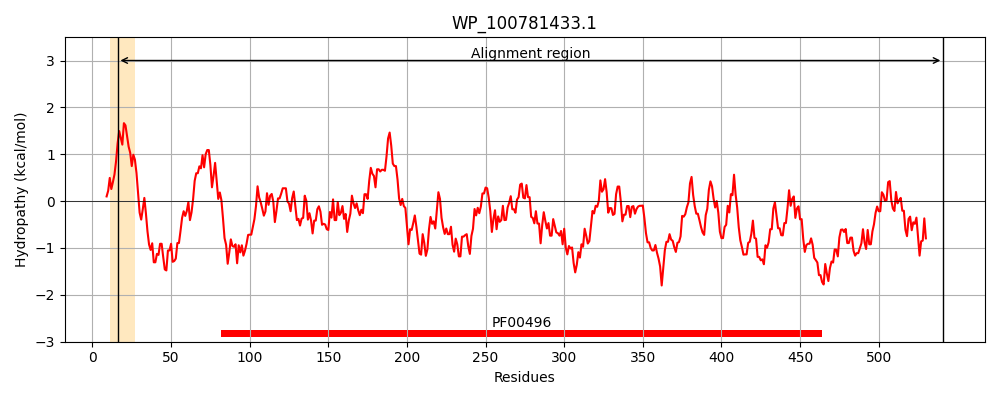
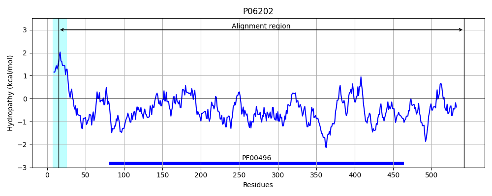
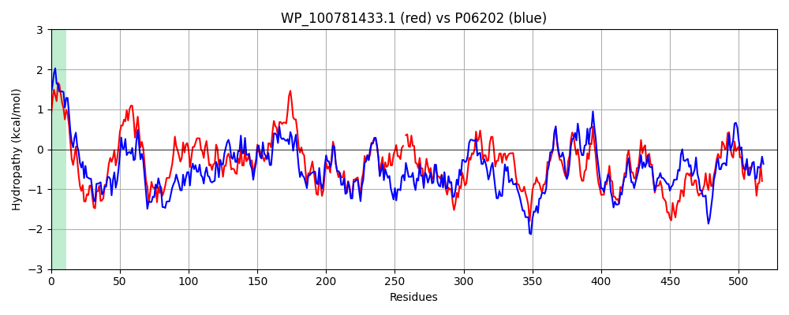

Hit Accession: P06202
Hit TCID: 3.A.1.5.1
Hit Description: gnl|BL_ORD_ID|8369 gnl|TC-DB|P06202|3.A.1.5.1 Periplasmic oligopeptide-binding protein precursor - Salmonella typhimurium.
Mach Len: 528
e:0.000000
Query TMS Count : 1
Hit TMS Count: 1
TMS-Overlap Score: 0.850000
Predicted Substrates:CHEBI:7755;oligopeptide
BLAST Alignment:
Score: 1449 , Bit scores: 562 bits, E-value: 0.0e+00, Alignment length: 528, Percentage identity: 53
Query: 16 MSLMVITGGALAAQVPPGTQLAEKQELVRNNGSEPASLDPHKVESDIEFNIISDLFEGLVSVTPAGAIQPRLAERWENKDNLLWTFHLRPGLTWSDGTAITAQDIVWSWQRLVSPATASPYASYPGNMHIANAREIALGQQGPETLGVKALNDSTLQVTLNQPNAAFLAMLAHPSLVPIDKVLVERFADKWTRPEHIVTSGPYKLTQWVVNERLVAERNAKYWDNAHTVINKVTYLPISSEAADVNRYKAGEIDIVY-TVPINQFAQLQKTMGDQLDVSPQLATYYYEFNTTRPPFNDARVRRALNMALDKDIIAGKVLGQGQRPAWVISQPDIGGVTLHNPDYASWPREKRIAEAKKLLAQAGYDDSHPLVFTLLYNTYESHQRIAIAASSMWKKNLGVEVKLQNQEWKTMLDTMHTHNFDAVRYAWIADYDDAATFLNTFRTGDSENTSQYSNPAYDEALRNAAKASDVATRGKYYQQAEDLLAQDVPAIPVYHYVRTHLVKPRVGGFT-PDKLGYYYTKDMYIKK 541
++ ++ A AA VP G QLA+KQ LVRNNGSE SLDPHK+E E N+ DLFEGL+ G P +AE+WENKD +WTFHLR WSDGT +TA D V+SWQRL P TASPYASY HIAN +I G++ LGVKAL+D T +VTL++P F +L HPS+ P+ K VE+F DKWT+P +IVT+G YKL WVVNER+V ERN +YWDNA TVIN+VTYLPISSE DVNRY++GEID+ Y +PI F +L+K + +++ V P L TYYYE N + PFND RVR AL +ALD+DII KV QG PA+ + P G L P++ W ++KR EAKKLLA+AG+ PL F LLYNT + H+++AIA +S+WKKNLGV V L+NQEWKT LDT H FD R W ADY++ +FLNT + S NT+ Y +PA+D+ + + K +D R + Y +AE L +D +PVY+YV LVKP VGG+T D L Y K++YI K
Sbjct: 15 LTALIAASAATAADVPAGVQLADKQTLVRNNGSEVQSLDPHKIEGVPESNVSRDLFEGLLISDVEGHPSPGVAEKWENKDFKVWTFHLRENAKWSDGTPVTAHDFVYSWQRLADPNTASPYASYLQYGHIANIDDIIAGKKPATDLGVKALDDHTFEVTLSEPVPYFYKLLVHPSVSPVPKSAVEKFGDKWTQPANIVTNGAYKLKNWVVNERIVLERNPQYWDNAKTVINQVTYLPISSEVTDVNRYRSGEIDMTYNNMPIELFQKLKKEIPNEVRVDPYLCTYYYEINNQKAPFNDVRVRTALKLALDRDIIVNKVKNQGDLPAYSYTPPYTDGAKLVEPEWFKWSQQKRNEEAKKLLAEAGFTADKPLTFDLLYNTSDLHKKLAIAVASIWKKNLGVNVNLENQEWKTFLDTRHQGTFDVARAGWCADYNEPTSFLNTMLSDSSNNTAHYKSPAFDKLIADTLKVADDTQRSELYAKAEQQLDKDSAIVPVYYYVNARLVKPWVGGYTGKDPLDNIYVKNLYIIK 542 | Protein Hydropathy Plots: |
|---|
|  |  |
Pairwise Alignment-Hydropathy Plot:
|
|---|
|  |